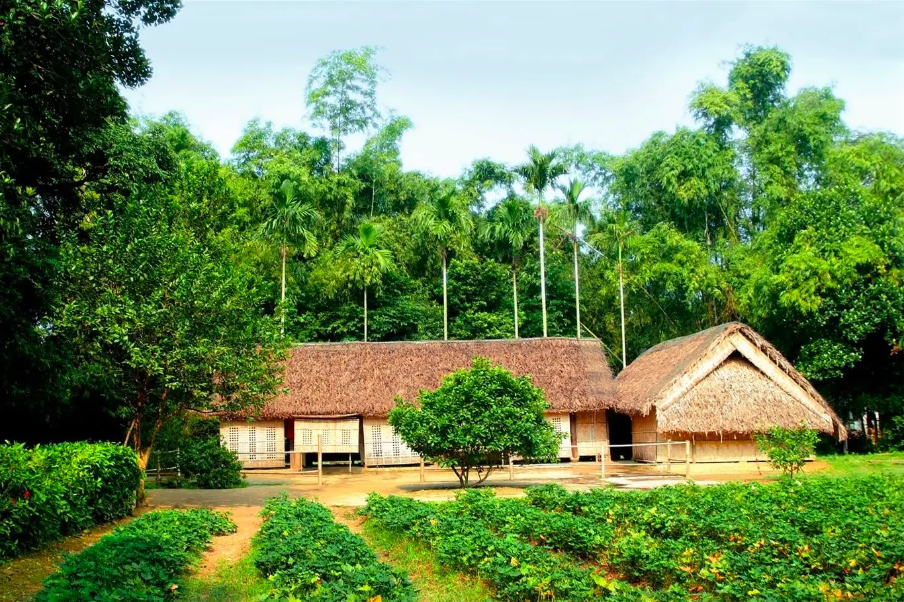
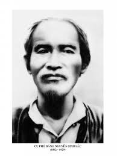
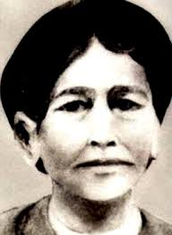
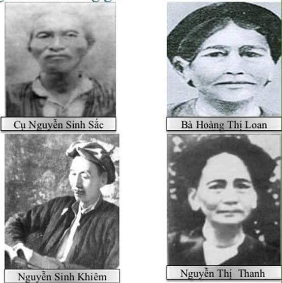
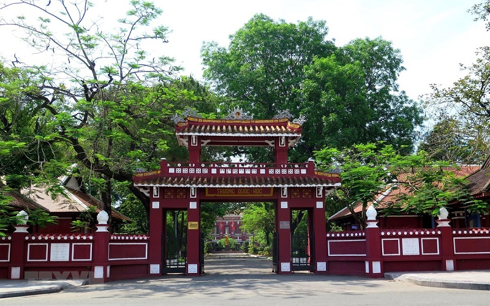

Làng Sen - Nghệ An
Hồ Chí Minh sinh ra tại Kim Liên, Nam Đàn, Nghệ An.
Đây là vùng đất giàu truyền thống yêu nước, hiếu học và cách mạng.
Vị lãnh tụ vĩ đại của dân tộc Việt Nam

Hồ Chí Minh sinh ra tại Kim Liên, Nam Đàn, Nghệ An.
Đây là vùng đất giàu truyền thống yêu nước, hiếu học và cách mạng.

Thân phụ của Chủ tịch Hồ Chí Minh.

Thân mẫu của Chủ tịch Hồ Chí Minh.

Gia đình giàu truyền thống yêu nước.

Từ nhỏ, Nguyễn Sinh Cung được học chữ Hán, Nho học và sau đó theo học chương trình Pháp - Việt.
Người từng học tại Huế và Trường Quốc học Huế, một trong những ngôi trường danh tiếng nhất Việt Nam thời bấy giờ.
Trong thời gian này, Người chứng kiến sự áp bức của thực dân Pháp, cuộc sống cơ cực của nhân dân và sự bất lực của triều đình phong kiến.
Những trải nghiệm đó đã hình thành lòng yêu nước, ý chí giải phóng dân tộc và khát vọng tìm ra con đường cứu nước mới.
Sinh tại làng Hoàng Trù, Nam Đàn, Nghệ An.
Theo gia đình vào Huế sau khi thân phụ đỗ Phó bảng.
Học tại Trường Quốc học Huế.
Dạy học tại trường Dục Thanh (Phan Thiết).
Từ năm 1911 đến năm 1941, Hồ Chí Minh đã đi qua nhiều quốc gia, vừa lao động, học tập vừa nghiên cứu các con đường cứu nước, để cuối cùng tìm ra con đường giải phóng dân tộc Việt Nam.
Rời Bến Nhà Rồng (Sài Gòn) bắt đầu hành trình tìm đường cứu nước.
Một trong những điểm dừng chân đầu tiên trên hành trình ra nước ngoài.
Làm nhiều nghề và tìm hiểu đời sống của nhân dân lao động.
Sinh sống và làm việc tại London, tiếp tục học hỏi văn hóa phương Tây.
Tham gia phong trào công nhân và phong trào yêu nước Việt Nam.
Nghiên cứu chủ nghĩa Mác - Lênin và hoạt động trong phong trào cộng sản quốc tế.
Thành lập Hội Việt Nam Cách mạng Thanh niên, chuẩn bị cho sự ra đời của Đảng.
Hoạt động trong cộng đồng Việt kiều và tuyên truyền cách mạng.
Sau hơn 30 năm bôn ba, Người trở về Pác Bó (Cao Bằng) để trực tiếp lãnh đạo cách mạng.